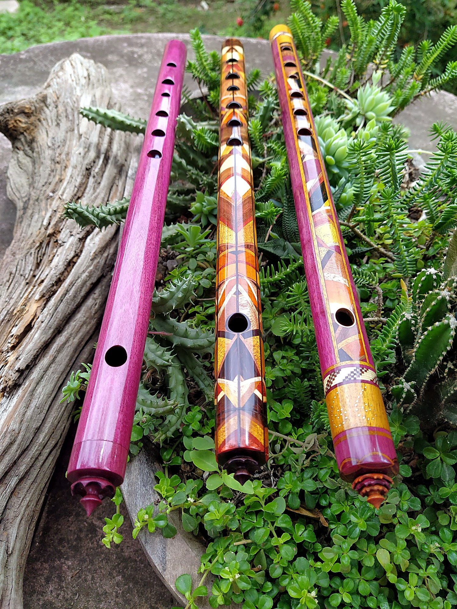
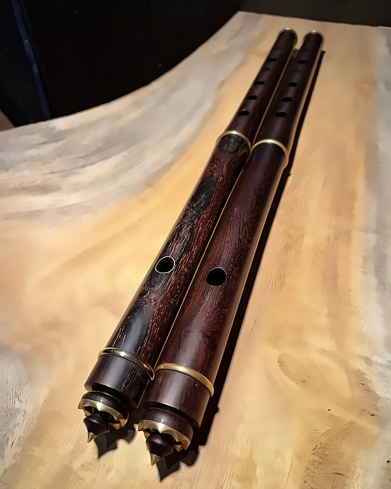
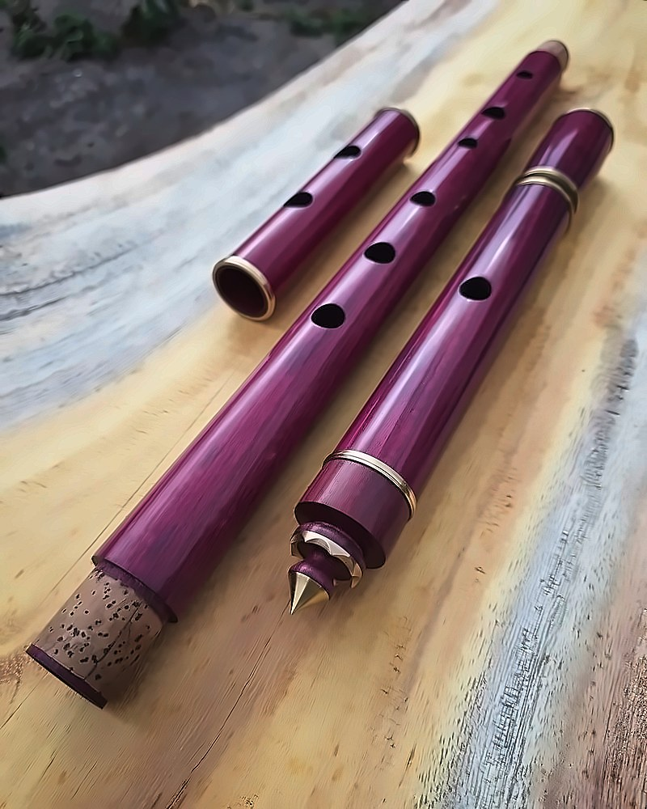
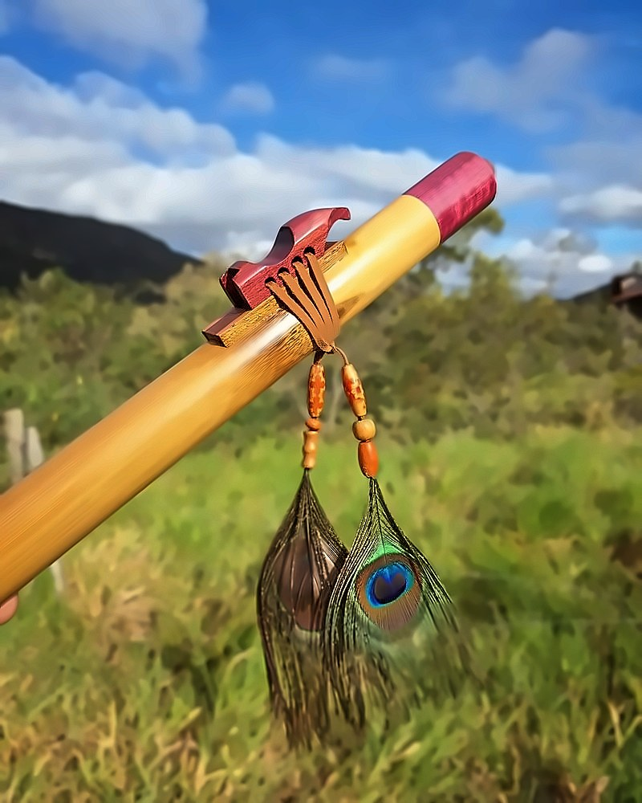
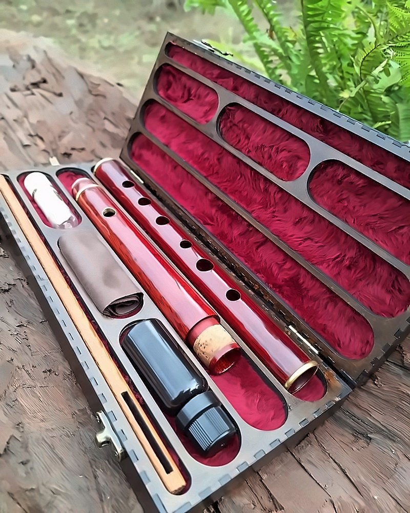

Igor Bastos
Flautas feitas à mão no Vale do Capão: pífanos, irlandesas e nativas, em bambu e madeiras brasileiras.
As flautas
Cada flauta é feita à mão, aqui na minha oficina no Vale do Capão, e sob encomenda: você escolhe o modelo, o tom e a madeira, e eu construo a sua do começo ao fim, mandando fotos e vídeos do processo. Quando tenho alguma flauta pronta para entrega, aviso aqui ou no Instagram.

Pífanos
O som do pife nordestino, brilhante e direto. De bambu ou de madeira, no tom que você quiser.
a partir de R$ 270Ver pífanos →
Flauta irlandesa
Ré grave, corpo cônico, som quente e soprado. A flauta da música tradicional irlandesa.
a partir de R$ 1.970Ver flauta irlandesa →
Flautas nativas
Som meditativo e introspectivo. Não tem embocadura: é só soprar no canal e tocar.
a partir de R$ 430Ver flautas nativas →
Estojos
Rígido, feito na medida da sua flauta, forrado de pelúcia e com o kit de limpeza dentro.
a partir de R$ 320Ver estojos →Calculadora de pife
Para quem faz pífano: escolha o tom, meça o tubo e veja onde furar, com desenho da flauta, molde em tamanho real para imprimir, afinador para flauta e um guia completo, do bambu ao pife afinado.
Abrir a calculadora →Como encomendar
- 1Modelo e tom
Me chame no WhatsApp e conte qual flauta você quer e em que tom. Se estiver em dúvida, eu te ajudo a escolher.
- 2Sinal de 50%
O restante antes do envio.
- 3Prazo
De 1 a 3 meses, conforme o modelo.
- 4Envio
Pelos Correios, postado em Palmeiras (BA).